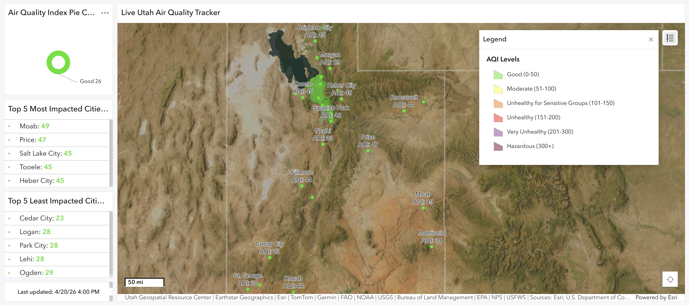
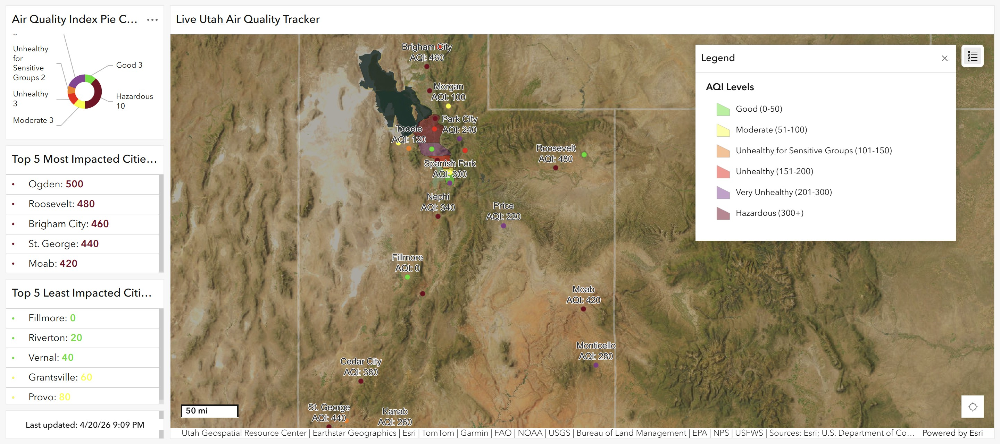

Live Utah Air Quality Mapping Dashboard
Skills & Concepts Demonstrated
- Communicate spatial data and analysis effectively to the public: Built a live, interactive ESRI dashboard to communicate complex public health and air quality hazard data.
- Identify and use appropriate algorithms for real-world projects: Developed automated Python data pipelines utilizing the
arcgislibrary, OAuth 2.0, and GitHub Actions to continuously pull and interpolate live API data. - Understand ethical and FAIR data practices: Made critical, real-time environmental risk data (AQI) openly accessible and easily understandable for Utah residents.
Programs Used & Data Sources
- Programs Used: Python (
arcgislibrary), GitHub Actions, ArcGIS Pro, ArcGIS Online, and ESRI Dashboards. - Data Sources: Live community sensor data (via IQAir API) and EPA Air Quality System (AQS) monitoring stations (via ESRI Living Atlas).
Project Summary
Utah has long faced atmospheric pollution challenges due to its complex topography, specifically the bowl-like effect of the Salt Lake Valley which traps contaminants. As the state makes strides toward meaningful changes in air quality such as Salt Lake City recently meeting the 2006 PM2.5 24-hour targets having a live, accessible way for citizens to monitor the Air Quality Index (AQI) remains critical for public health.
This project involved building a fully automated, live air quality dashboard. By utilizing the IQAir API and the EPA's Air Quality System (AQS) data from the ESRI Living Atlas, Python scripts were developed to extract current data, perform spatial interpolation across the urban corridor, and update ArcGIS Online feature layers. To bypass institutional server limitations, these scripts were securely deployed via GitHub Actions using OAuth 2.0, running on a continuous schedule to feed the interactive dashboard below.
Live Interactive Dashboard
The dashboard below is live. You can click on any of the cities, zoom into the urban corridor to view the interpolated AQI surface, and review the top 5 most and least impacted areas.
Static Figures

